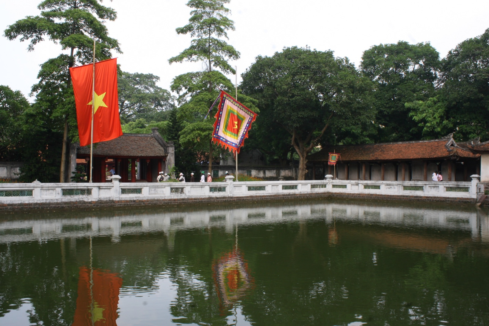

Phương đình là kiến trúc đình vuông nhỏ, đặt trong khuôn viên di tích, có chức năng nghỉ chân và thưởng cảnh.
Về di tích · Công trình kiến trúc · B3.12

Phương đình là kiến trúc đình vuông nhỏ, đặt trong khuôn viên di tích, có chức năng nghỉ chân và thưởng cảnh.